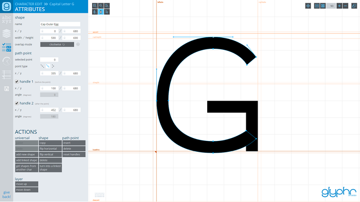

|
Help & Documentation |
Overviewwelcome updates licensingBasicsstarting a new project navigation and layout file formats unicodeEditingshape editing canvas tools keyboard shortcutsPanelschooser shapes attributes glyph shape path point component instance edit history guidesPagesglyph edit components ligatures kerning test drive font settings project settings import svg export font about |
Glyph Edit PageGlyph Edit is where most of your font creation time will be spent. Each glyph in your font is comprised of many shapes. Shapes are closed outlines or paths, comprised of many path points. More on shape editing can be found on the shape editing page. Depending on what shape or path point is selected, the shape attribute panel or the path point attribute panel will show editable attributes and actions. Many of these attributes, like x/y position, can either be edited from the attributes panel, or changed directly on the edit canvas. If you want to add or remove certain glyphs from your font, you can do so on the font settings page. |